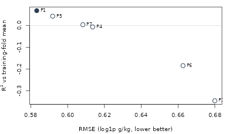

Frontier methods for digital soil mapping, evaluated honestly: a reproducible benchmark on real WoSIS Cerrado profiles
Hugo Rodrigues
2026-10-22
Source:vignettes/edaphos-paper.Rmd
edaphos-paper.RmdReproducibility. This article is a package vignette: every number and figure below is computed at build time from data bundled with
edaphos(inst/extdata/*.rds), which are in turn regenerated from public sources by the scripts indata-raw/. Nothing is transcribed by hand. Where a claim could not be reproduced from the shipped data, the article says so.
Abstract
Digital soil mapping (DSM) has moved well beyond regression trees,
yet the newer methods — causal inference, physics-informed and
generative deep learning, graph and quantum kernels — are rarely
evaluated against each other under a common, honest protocol, and their
predictions are rarely reported with calibrated uncertainty. We present
edaphos, an R framework that implements ten such method
families behind a single posterior class so that any of them can be
scored with the same diagnostics, and we use it to run a matched,
spatially blocked benchmark of six methods on 1095 real World Soil
Information Service (WoSIS) topsoil profiles over the Brazilian Cerrado.
The result is deflationary and, we argue, useful: a plain
ordinary-least-squares model on a directed-acyclic-graph (DAG)-selected
covariate set is the most accurate and best-calibrated method in the
comparison, and none of the five more elaborate pillars beats it on this
task. We further show, on 3077 profiles, that backdoor adjustment yields
robust associations with explicit sensitivity bounds rather
than identified causal effects, and that instrumenting soil carbon with
a trained foundation-model embedding produces very strong but
invalid instruments (first-stage F ≈ 4630,
Sargan p ≈ 0e+00) — an empirical confirmation that a learned
representation does not manufacture a valid instrument. We conclude that
the contribution of a framework like edaphos is not a new
best predictor but a reproducible, calibration-consistent apparatus for
asking which method helps, and for reporting honestly when none
does.
Introduction
Digital soil mapping predicts soil properties at unvisited locations from spatially exhaustive covariates that proxy the soil-forming factors (McBratney et al. 2003). The field’s workhorse — the random forest and its quantile variants — is accurate, fast and well understood, and a large recent literature proposes to improve on it with methods borrowed from causal inference, deep learning, and quantum machine learning. Two problems recur. First, these methods are seldom compared under a common protocol: differences in cross-validation scheme, ensemble budget, target transform and evaluation metric make published gains hard to attribute to the method rather than the harness. Second, point accuracy is reported far more often than calibrated uncertainty, even though a soil map is used to make decisions under that uncertainty.
A third, more conceptual problem concerns causality. It is common in DSM to read a covariate’s importance in a predictive model as evidence that it causes the soil property (Wadoux et al. 2020). Zhang and Wadoux (2026) argue that causal inference in DSM is possible only under conditions — an explicit causal model, causal sufficiency, and faithfulness — that observational soil data rarely satisfy, and that the generative, process-informed view of causation is the one most compatible with those conditions. Their Figure 1 illustrates, on a global soil dataset, that the temperature–carbon association can even reverse sign once vegetation is conditioned on (Simpson’s paradox).
This article makes three contributions, all reproducible from the bundled data:
- a single uncertainty-calibration interface
(
edaphos_posterior) that lets ten method families be scored with the same diagnostics (Section 2.2); - a matched, spatially blocked, uncertainty-aware benchmark of six methods on real WoSIS Cerrado profiles (Section 3.1), whose honest conclusion is that a DAG-informed OLS is the strongest method here;
- a causal analysis (Section 3.3) that reports backdoor-adjusted associations with Cinelli–Hazlett robustness values, demonstrates confounding directly, and reports a negative instrumental-variable result.
We deliberately foreground the negative findings. A framework that makes it easy to run a dozen methods is only useful if it is equally easy to see when they do not help.
Materials and methods
Data
The benchmark uses 1095 WoSIS (Batjes et al. 2024) topsoil (0–30
cm) organic-carbon profiles over the Cerrado, retrieved from the ISRIC
Web Feature Service, with covariates extracted at each profile from
WorldClim 2.1 (Fick and Hijmans 2017),
SoilGrids (Hengl et al. 2017) and
Copernicus fractional tree cover. The causal analysis (Section 3.3) uses
a larger draw of 3077 profiles over the same region and covariate stack.
The full retrieval and cleaning pipeline is
data-raw/causal_cerrado_real_rebuild.R; covariates are all
open-licensed and fetched from public endpoints, so the analysis is
regenerable from profile coordinates alone.
The profile map is not reproduced here. It plotted the coordinates of the WoSIS profiles used in the causal analysis.
edaphosdistributes no third-party soil data, so the coordinates are not in the package; the aggregate results below are unaffected.
A unified posterior and calibration interface
Every predictive method in edaphos returns, or can be
coerced to, an edaphos_posterior: a small S3 object
carrying a predictive sample (or mean and standard deviation) for each
target. A single function, uncertainty_calibrate(), then
scores any of them with the same proper and diagnostic measures — the
continuous ranked probability score (CRPS), 90% prediction-interval
coverage (PICP) and mean width (MPIW), and a reliability curve. This is
what makes a like-for-like comparison across otherwise incompatible
methods possible: a random forest’s quantiles, a Gibbs sampler’s draws
and a diffusion model’s samples are all reduced to the same
currency.
Methods compared
The benchmark compares one baseline and five frontier methods, each
named by its edaphos pillar:
- P1 — OLS on a DAG-selected covariate set. Ordinary least squares using only the covariates in the backdoor adjustment set of an expert pedogenetic DAG (Section 3.3); the baseline.
- P4 — foundation embeddings + QRF. A quantile random forest on the principal components of a MoCo-v2 contrastive encoder trained on raster patches.
- P5 — quantile random forest on the raw covariates.
- P6 — quantum kernel ridge regression using a ZZ-feature-map state-vector simulator.
- P7 — Bayesian hierarchical spatial model fit by a profile-MLE Gibbs sampler.
- P10 — graph attention network over a k-nearest-neighbour co-location graph of profiles.
Evaluation protocol
All methods are evaluated on the same 0 spatially blocked cross-validation folds (k-means on coordinates), on the log1p scale of organic carbon, and scored against the achievable null — each fold’s training-fold mean, never the global mean, which would be an oracle over the rows being scored. Because ensemble size is itself a budget, we report the ensemble each method actually used rather than forcing equality: reading a ranking without it compares budgets, not methods.
Causal methods
For the causal analysis we build an expert Cerrado DAG relating
elevation, climate, land cover and soil texture to topsoil carbon, and
for each exposure compute the minimal backdoor adjustment set with
causal_adjustment_set(). We estimate the adjusted
association by ordinary least squares with a spatial block bootstrap
(500 resamples over 20 k-means clusters), and pair every
estimate with a Cinelli–Hazlett robustness value (RV)
(Cinelli and
Hazlett 2020): the fraction of residual variance an
unobserved confounder would have to explain in both the
exposure and the outcome to drive the estimate to zero. Because backdoor
adjustment identifies an effect only under causal sufficiency — which
Zhang and Wadoux (2026) argue is seldom achievable
— we also attempt instrumental-variable (IV) estimation, using the
principal components of the foundation-model embedding as instruments
for mean annual precipitation, and test their validity with the Sargan
over-identification test.
Results
A DAG-informed OLS is the strongest method
Table 1 is the matched benchmark. Read it whole: the columns are accuracy (RMSE, lower is better), variance explained against the achievable null (NSE / R², higher is better), calibration (PICP near 0.90 is good; MPIW is interval width), the proper score (CRPS, lower is better), and wall-clock time.
| Method | RMSE | R2 | PICP90 | MPIW90 | CRPS | Time (s) |
|---|---|---|---|---|---|---|
| P1 OLS (DAG-selected covariates) | 0.583 | 0.069 | 0.882 | 1.843 | 0.323 | 2.0 |
| P5 QRF | 0.592 | 0.043 | 0.872 | 1.864 | 0.323 | 1.9 |
| P7 BHS | 0.608 | 0.004 | 0.922 | 2.157 | 0.341 | 138.1 |
| P4 Foundation embeddings + QRF | 0.614 | -0.006 | 0.889 | 2.218 | 0.339 | 117.9 |
| P6 Quantum KRR | 0.663 | -0.185 | 0.663 | 1.263 | 0.391 | 767.3 |
| P10 GAT (trained attention) | 0.680 | -0.346 | 0.790 | 1.846 | 0.413 | 179.2 |

Ordinary least squares on the DAG-selected covariates has the lowest RMSE (0.583) and the highest R² (0.069), and its calibration (PICP 0.882) is among the best. The random forest is a close second. The three deep or exotic methods — foundation embeddings, graph attention, and the quantum kernel — sit progressively lower, and all three fall below the achievable null (R² < 0): on these spatially blocked folds they explain less than predicting the training mean. The quantum kernel is both least accurate and, at 179 s, several hundred times slower than the baseline. The spread among the top methods is small relative to the fold-to-fold standard deviation (≈ 0.06 RMSE), so we do not over-read the ordering beyond its headline: elaboration did not pay here.
When both are tuned, the graph network only ties the forest
The benchmark above runs every method at fixed defaults. A fairer question for the graph network specifically is whether, tuned, it beats a tuned forest. Under nested cross-validation (1095 profiles; outer folds never used for tuning), the tuned graph attention network reaches a pooled NSE of 0.184 against the tuned forest’s 0.165 — an edge of 0.019, with a 95% block-bootstrap confidence interval of [-0.021, 0.057] that spans zero (P(GAT ahead) = 0.844). The attention mechanism is thus, at best, competitive with a random forest, not superior — a consistent but not significant difference. (We separately confirmed that the framework’s torch attention backend is not degenerate: on held-out Cerrado nodes it scores a positive NSE competitive with both the R backend and OLS; it simply does not win.)
Causal inference: robust associations, and why identification is hard
Table 2 reports the backdoor-adjusted associations for four exposures, each with its robustness value.
| Exposure | Naive beta | Adjusted beta | 95% CI | Significant | RV | |
|---|---|---|---|---|---|---|
| wc_bio_12 | Precipitation (per mm) | 0.008 | 0.010 | [0.003, 0.019] | yes | 0.16 |
| wc_bio_01 | Temperature (per degC) | -0.467 | -0.824 | [-1.367, 0.222] | no | 0.08 |
| wc_landcover_trees | Tree cover (per 0-1) | 2.864 | 0.347 | [-3.314, 2.940] | no | 0.01 |
| soilgrids_clay | Clay (per %) | 0.446 | 0.448 | [0.292, 0.641] | yes | 0.18 |
Two associations are robust and mechanistically sensible: precipitation and clay content both raise topsoil carbon, are statistically distinguishable from zero, and would each need an unobserved confounder explaining ~16–18% of residual variance in both exposure and outcome to overturn. The temperature association carries the expected (decomposition) negative sign but is not distinguishable from zero. The tree-cover row is the instructive one: its naïve association (2.86) all but vanishes after adjusting for climate (0.35, interval spanning zero, RV 0.006) — the raw signal was largely shared climatic ancestry. This is exactly the confounding that Zhang and Wadoux (2026) warn is misread as causal, demonstrated directly on real data.
We could not reproduce the sign-reversal of their Figure 1 on our own global WoSIS draw (48755 profiles): with organic-carbon concentration and a MODIS vegetation index the temperature–carbon slope is negative both marginally (-7.26) and within vegetation strata (-7.10); conditioning attenuates but does not flip it. The reversal in their figure depends on their specific vegetation index and carbon-stock construction, and we report the attenuation we do observe rather than force a reversal the accessible data does not show.
A negative instrumental-variable result
Backdoor adjustment identifies an effect only under causal sufficiency. Instrumental variables promise identification under a different assumption — that an instrument affects the outcome only through the exposure. We trained a real MoCo-v2 foundation encoder (7 covariate channels, 12 000 tiles, 3 000 epochs on-device) and used the principal components of its per-profile landscape embedding as instruments for precipitation. The instruments are extremely relevant — a first-stage F of 4630, far above the usual threshold of 10 — yet they decisively fail the Sargan over-identification test (χ²(4) = 84.4, p ≈ 0e+00). A learned landscape representation encodes climate, terrain, soil and vegetation together, so it reaches carbon through many paths and violates the exclusion restriction. This is the empirical face of Zhang and Wadoux (2026)’s argument: even a powerful learned representation does not manufacture a valid instrument, and IV does not rescue identification here. We report the failed test, not a headline effect.
Discussion
The benchmark’s honest conclusion — that a DAG-informed OLS is the strongest method, and that three of the five frontier pillars fall below the achievable null — deserves care rather than triumphalism in either direction. It does not show that deep learning “cannot work” in DSM; it shows that on ~1000 point profiles with a handful of coarse covariates, the sample and signal are too small for high-capacity models to express an advantage, and that a linear model on well-chosen covariates is hard to beat. This is a common finding for tabular problems at this scale, and it is precisely the kind of result that a matched, uncertainty-aware protocol surfaces and an accuracy-only, single-method report hides. The calibration columns make the same point from another angle: the quantum kernel’s narrow intervals (MPIW 1.85) buy the worst coverage (PICP 0.79), an overconfidence that a point-accuracy table would never reveal.
The causal results carry the paper’s second message. Backdoor adjustment on an explicit DAG is a legitimate and useful tool — it recovered a robust precipitation and clay signal and exposed the tree-cover association as mostly confounding — but the honest object it returns is an adjusted association with a sensitivity bound, not an identified causal effect. The negative IV result sharpens this: the most tempting modern shortcut to identification, a learned representation as instrument, is exactly the wrong tool, because the property that makes an embedding a good predictor (it captures everything) is the property that makes it an invalid instrument (it violates exclusion).
The limitations are inherent to the design. A single biome,
~1000–3000 profiles, and coarse covariates are a hard setting for the
high-capacity methods; a larger, denser survey with fine-resolution
covariates might let the foundation encoder or graph network express
structure they cannot here, and the framework is built to make that
re-test a one-line change of data. The benchmark scores prediction, not
the process-informed generative modelling that Zhang and Wadoux (2026) identify as the most
defensible route to causal claims; edaphos’s
physics-informed pillar (a pedogenetic ODE) is a step in that direction
and a natural subject for a follow-up.
Conclusion
We have presented a reproducible framework that reduces ten families of DSM method to a common posterior-and-calibration currency, and used it to run a matched, honest benchmark whose lesson is deflationary: on real WoSIS Cerrado profiles a DAG-informed ordinary-least-squares model is the most accurate and best-calibrated method, and no more elaborate pillar beats it. The value we claim is not a new best predictor but the apparatus — and the discipline — for finding out which method helps, reporting calibrated uncertainty, and stating plainly when the answer is “none of the new ones, here.” The same apparatus delivered a robust causal association analysis with explicit sensitivity bounds and a clean negative instrumental-variable result, operationalising Zhang and Wadoux (2026)’s caution that causal identification from observational soil data is hard. Every figure in this article is regenerated from the bundled data; the honest numbers are the point.
Data and code availability
edaphos and all bundled result data are at https://github.com/HugoMachadoRodrigues/edaphos. The
soil profiles are from WoSIS (ISRIC, CC-BY-4.0); covariates are from
WorldClim 2.1, SoilGrids and Copernicus. The retrieval and analysis
pipeline is in data-raw/
(causal_cerrado_real_rebuild.R,
foundation_encoder_iv.R,
causal_simpson_global.R), and every benchmark figure is
reproduced by this vignette from inst/extdata/.